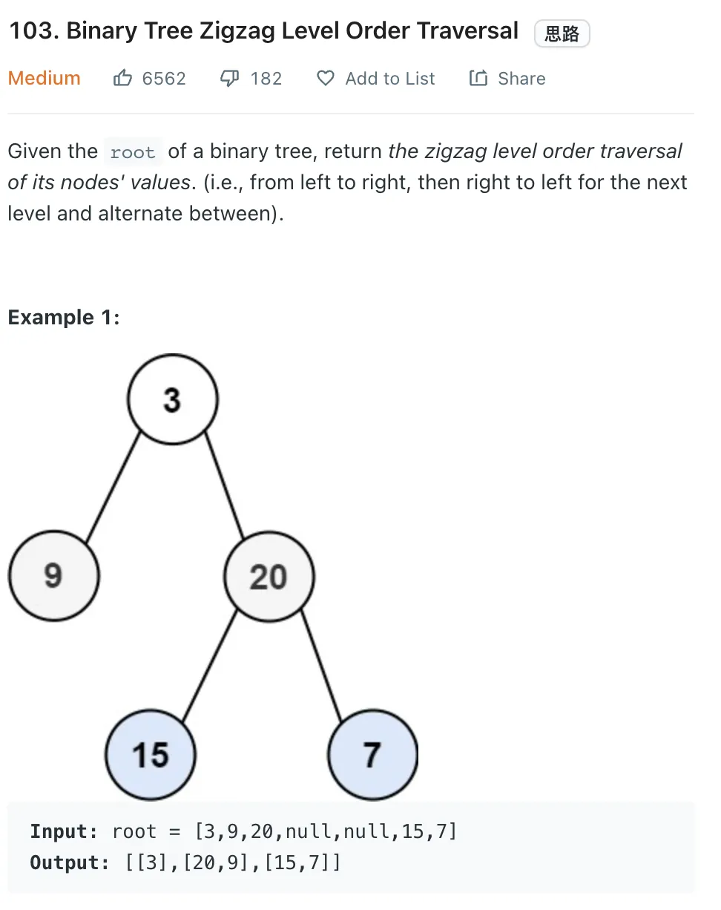
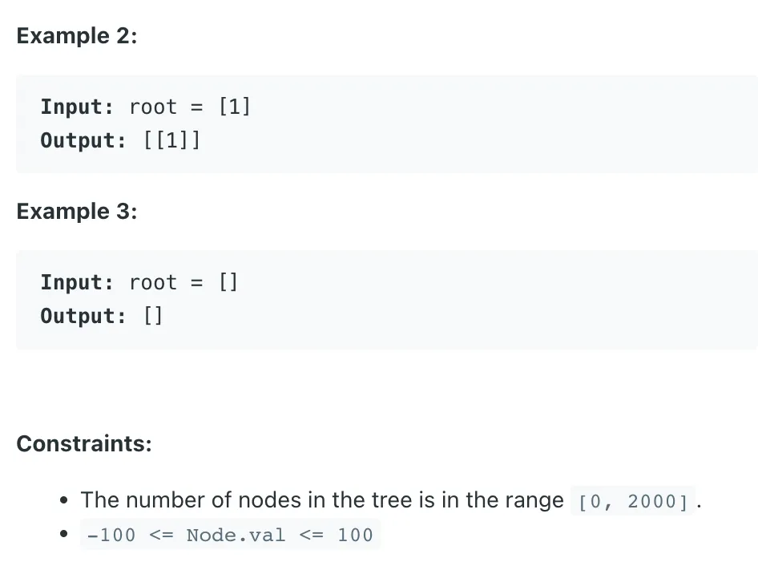

103. Binary Tree Zigzag Level Order Traversal
考過的公司：Asked by: Amazon, Bytedance, Google
Question


先自己想想看 🤔Try it yourself first 🤔
✍🏽 My Solution - BFS
Runtime: 1 ms, faster than 96.25% of Java online submissions for Binary Tree Zigzag Level Order Traversal.
Memory Usage: 42.5 MB, less than 67.90% of Java online submissions for Binary Tree Zigzag Level Order Traversal.
class Solution {
List<List<Integer>> res = new ArrayList<>();
public List<List<Integer>> zigzagLevelOrder(TreeNode root) {
if (root == null) return res;
Queue<TreeNode> queue = new LinkedList<>();
queue.offer(root);
// 为 true 时向右，false 时向左
boolean flag = true;
while (!queue.isEmpty()) {
int sz = queue.size();
LinkedList<Integer> level = new LinkedList<>();
for (int i = 0; i < sz; i++) {
TreeNode cur = queue.poll();
if (flag) {
level.addLast(cur.val);
} else {
level.addFirst(cur.val);
}
if (cur.left != null) {
queue.offer(cur.left);
}
if (cur.right != null) {
queue.offer(cur.right);
}
}
flag = !flag;
res.add(level);
}
return res;
}
}
🧠 Thought Process
- Why did I choose this particular implementation?
- 建立一個flag，ture時是正向，false為反向
- ture將節點往後接入
- false將節點頭插，就可以實現反向
- What is the time/space complexity of my solution? How do I know?
- time :O(n)
- space: O(n)
- What mistakes did I make?
- 自己有先寫了一版，但是實現Z字型的時候有問題
- LinkedList 的方法不熟 要記得寫法
Solution #1 [DFS]
Runtime: 0 ms, faster than 100.00% of Java online submissions for Binary Tree Zigzag Level Order Traversal.
Memory Usage: 41.1 MB, less than 90.19% of Java online submissions for Binary Tree Zigzag Level Order Traversal.
class Solution {
public List<List<Integer>> zigzagLevelOrder(TreeNode root) {
List<List<Integer>> ans = new ArrayList<>();
DFS(root, 0, ans);
return ans;
}
private void DFS(TreeNode root, int level, List<List<Integer>> ans) {
if (root == null) {
return;
}
if (ans.size() == level) {
ans.add(new ArrayList<>());
}
if (level % 2 == 0) {
ans.get(level).add(root.val); //添加到末尾
} else {
ans.get(level).add(0, root.val); //添加到頭部
}
DFS(root.left, level + 1, ans);
DFS(root.right, level + 1, ans);
}
}